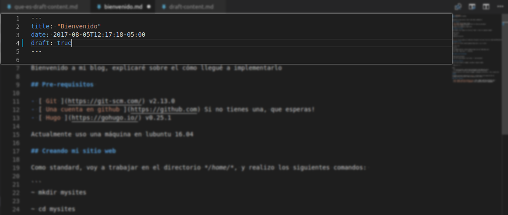

Hola, en este post, explicaré de qué trata el contenido de tipo draft y qué tan clave es.

Que és el contenido draft?
Géstores de contenido como drupal, wordpress y [gohugo]() muestran el estado del artículo en draft cada vez que se crea uno.
Este estado nos indica que es para fines de pre-producción, para revisión, o están a la espera de una aprobación de un grupo, un tercero, etc.
Normalmente dichos articulos no se visualizan en portales de alta demanda porque indican que hay mejoras de por medio o confirmar una otra info en el contenido.
Cómo se maneja este tipo de articulos en goHugo?
Cuando creamos un nuevo articulo mediante este comando en consola:
~ hugo new posts/my-articulo-nuevo-cool
Dicho comando genera un nuevo archivo tomando como plantilla el archivo default.md, este archivo se encuentra en la carpeta raíz del proyecto con el nombre de archetypes, y contiene:
---
title: "{{ replace .TranslationBaseName "-" " " | title }}"
date: {{ .Date }}
draft: true
---
Como se visualiza, el archivo contiene un par de 3 guiones (-) y dentro de este un formato de llave-valor en la parte superior, esta sección es llamada también Front Matter
Cómo visualizo mis artículos draft
Por defecto todo nuevo articulo tiene la llave draft con valor true, y para ello seguimos los comandos para visualizarlo en local.
Cómo cambio de estado a mis articulos?
Simplemente actualiza el valor de la llave draft de true a false.
Cómo visualizo mis articulos actualizados?
Es mucho mas sencillo, en local basta ejecutar este comando:
hugo server
Cómo publico mis articulos
Retirando el parámetro -D en las indicaciones de generación y publicación de archivos